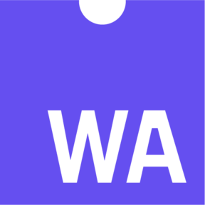
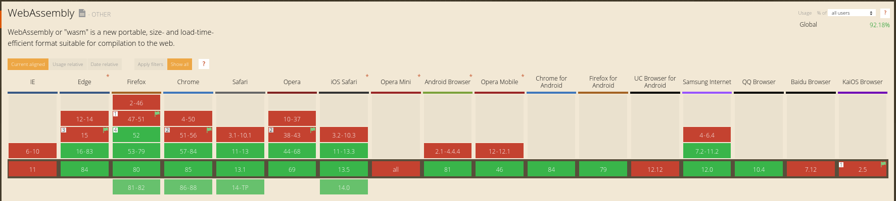
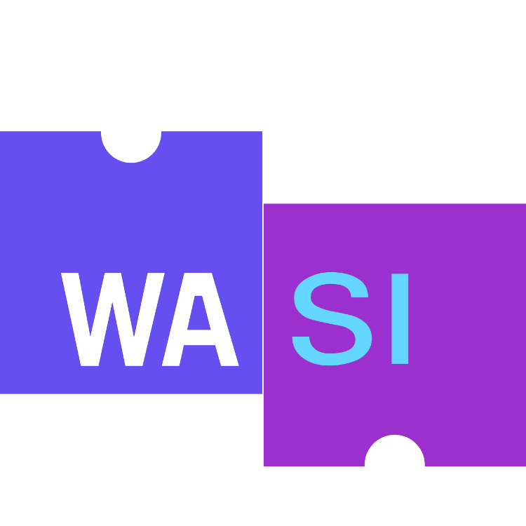

class: center, middle # Running Rust inside of a browser <div style="position: absolute; bottom: 5%; right: 5%;"> .right[ twitter.com/tomaka17 <img src="twitter.png" alt="Twitter" height="16" /><br /> github.com/tomaka <img src="github.png" alt="GitHub" height="16" /><br /> ] </div> --- # Introduction: what is WebAssembly? <div style="position: absolute; bottom: 5%; right: 5%;"> .right[  ] </div> --- # Introduction: what is WebAssembly? WebAssembly is a compilation target. - Step 1: compile your program to WebAssembly - Step 2: deploy your .wasm file as if it was JavaScript - Step 3: users' browsers run that WebAssembly, and thus your program <div style="position: absolute; bottom: 5%; right: 5%;"> .right[ ] </div> --- # Introduction: what is WebAssembly? WebAssembly is a compilation target. - Step 1: compile your program to WebAssembly - Step 2: deploy your .wasm file as if it was JavaScript - Step 3: users' browsers run that WebAssembly, and thus your program Revisits the dream of "compile once, run everywhere". - What Java promised in the 1990s. <div style="position: absolute; bottom: 5%; right: 5%;"> .right[ ] </div> --- # Introduction: what is WebAssembly? WebAssembly is a compilation target. - Step 1: compile your program to WebAssembly - Step 2: deploy your .wasm file as if it was JavaScript - Step 3: users' browsers run that WebAssembly, and thus your program Revisits the dream of "compile once, run everywhere". - What Java promised in the 1990s. - What NodeJS promised, more recently. <div style="position: absolute; bottom: 5%; right: 5%;"> .right[ ] </div> --- # Introduction: what is WebAssembly? WebAssembly is widely supported by browsers.  <div style="position: absolute; bottom: 5%; right: 5%;"> .right[ <small>caniuse.com</small> ] </div> --- # Rust and WebAssembly --- # Rust and WebAssembly ## Why Rust? - Excellent support for WebAssembly: - `rustup target add wasm32-unknown-unknown` - `cargo build --target=wasm32-unknown-unknown` - ... - Profit --- # A success story --- # A success story Some context: - Polkadot & Substrate are some of the biggest open source Rust repositories around. - Around 450k lines of code (not counting dependencies). - Started in 2017, re-using code written in 2015. --- # A success story Some context: - Polkadot & Substrate are some of the biggest open source Rust repositories around. - Around 450k lines of code (not counting dependencies). - Started in 2017, re-using code written in 2015. - Takes a long time to compile. <div style="position: absolute; bottom: 15%; left: 15%; white-space: pre;"> # Polkadot on a Thinkpad X1 6th gen cargo clean && time cargo build --release real 69m50,352s user 134m44,260s sys 2m36,023s </div> <div style="position: absolute; bottom: 17%; right: 45%;"> </div> --- # A success story <div style="margin-top: 100px"> cargo build --target=wasm32-unknown-unknown just works! 🎉 </div> --- # A success story <div style="margin-top: 100px"> cargo build --target=wasm32-unknown-unknown just works! 🎉 </div> <div style="margin-top: 50px"> ...but not without efforts </div> --- # Caveats --- # Caveats ## Way easier if everything is pure Rust! - Some Rust libraries compile C/C++ code under the hood. - This requires a C/C++ compiler capable of compiling for WebAssembly. - Not all systems have one. - Example problematic crates: - `ring`, which uses inline assembly - `openssl` - `sodiumoxide` - ... --- # Caveats ## Way easier if everything is pure Rust! - Some Rust libraries compile C/C++ code under the hood. - This requires a C/C++ compiler capable of compiling for WebAssembly. - Not all systems have one. - Example problematic crates: - **Basically everything cryptographic** --- # Caveats ## Way easier if everything is pure Rust! - Some Rust libraries compile C/C++ code under the hood. - This requires a C/C++ compiler capable of compiling for WebAssembly. - Not all systems have one. - Better use a whitelist of cryptographic crates: - `ed25519-dalek` - `curve25519-dalek` - `secp256k1` - ... --- # Caveats ## Isolate I/O from non-I/O Problem: Many parts of the standard library non-functional. Example: - `std::fs::File` - `std::net::TcpStream` - `std::path::Path` - `std::process::Command` - `std::thread::spawn` - ... --- # Caveats ## Isolate I/O from non-I/O Problem: Many parts of the standard library non-functional. Example: - `std::fs::File` - `std::net::TcpStream` - `std::path::Path` - `std::process::Command` - `std::thread::spawn` - ... *Problematic if used deep within the code!* --- # Caveats ## Separate I/O from non-I/O code Solution: Avoid mixing I/O code with non-I/O code. Any code that: - Accesses files. - Opens TCP/UDP sockets. - Executes other programs. - ... Must be easy to disable. --- # Caveats ## Separate I/O from non-I/O code Solution: Avoid mixing I/O code with non-I/O code. Any code that: - Accesses files. - Opens TCP/UDP sockets. - Executes other programs. - ... Must be easy to disable. **Not specific to WebAssembly but good software design in general!** --- # Caveats ## No threads --- # Caveats ## Time management --- # About Wasi <div style="position: absolute; bottom: 5%; right: 5%;">  </div> --- # About Wasi - WebAssembly System Interface - https://wasi.dev/ - Still work in progress. Wasi = WebAssembly + environment similar to an operating system. <div style="position: absolute; bottom: 5%; right: 5%;"> </div> --- # About Wasi - WebAssembly System Interface - https://wasi.dev/ - Still work in progress. Wasi = WebAssembly + the following: - A file system. - Access to a clock. - Stdin/stdout. - Command line arguments. - Environment variables. - TCP/UDP sockets (in the future). <div style="position: absolute; bottom: 5%; right: 5%;"> </div> --- # About Wasi - WebAssembly System Interface - https://wasi.dev/ - Still work in progress. Wasi = WebAssembly + the following: - A file system. - Access to a clock. - Stdin/stdout. - Command line arguments. - Environment variables. - TCP/UDP sockets (in the future). Strict in terms of security. - Each feature can be enabled/disabled individually. - Access to the host's file system based on a whitelist. <div style="position: absolute; bottom: 5%; right: 5%;"> </div> --- class: middle, center # Conclusion --- class: center, middle # Thank you! <div style="position: absolute; bottom: 5%; right: 5%;"> .right[ twitter.com/tomaka17 <img src="twitter.png" alt="Twitter" height="16" /><br /> github.com/tomaka <img src="github.png" alt="GitHub" height="16" /><br /> ] </div>